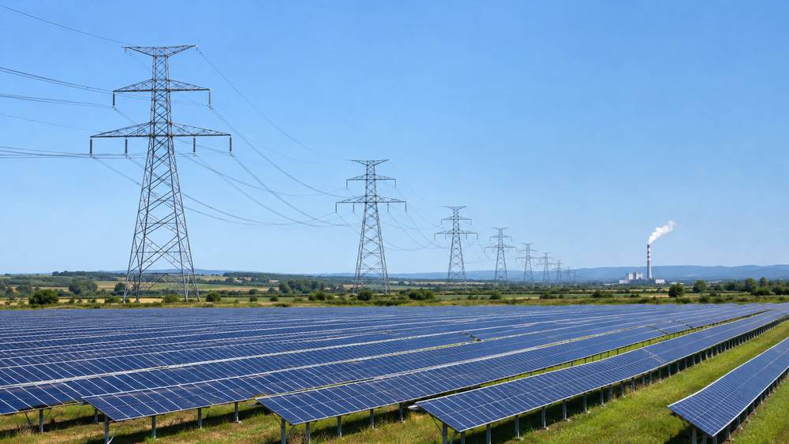

RPS 의무공급량 확정, 1월보다 15만MWh 줄어

기후에너지환경부가 11월 24일 29개 공급의무자 몫을 6,917만4,827MWh, 9,407만7,763REC로 확정했다. 한국남부발전 감소 폭이 가장 컸다.
2026년 재생에너지 공급의무화 제도(RPS) 공급의무자 29곳이 채워야 할 의무공급량이 6,917만4,827MWh로 확정됐다. 기후에너지환경부는 11월 24일 공고 제2026-1055호에서 공급인증서(REC) 기준 의무량을 9,407만7,763REC로 정했다. 1월 30일 예정 공고(제2026-77호)의 6,933만845MWh보다 15만6,018MWh, REC로는 21만2,185REC 적다.
1월 공고는 통계청이 승인하는 한국전력통계가 확정되면 다시 확정 공고한다고 적었고, 이번 공고가 그 확정치다. 29곳 가운데 11곳의 의무량이 바뀌었고 18곳은 그대로다. 감소 폭은 한국남부발전이 6만8,823MWh로 가장 컸다. 한국남동발전 5만7,828MWh, 한국중부발전 4만1,521MWh, GS EPS 3만5,406MWh가 뒤를 잇는다. 한국동서발전은 3만1,336MWh, 한국서부발전은 1만7,388MWh 늘었다.
한국수력원자력과 발전 공기업 5곳으로 이뤄진 그룹Ⅰ의 의무량은 5,015만1,101MWh로 전체의 72.5%다. 한수원 한 곳이 1,321만638MWh로 가장 많다. REC 의무량은 MWh에 환산비율 1.36을 곱해 매긴다(공급인증서 발급 및 거래시장 운영에 관한 규칙 제37조제1항).
개정 「재생에너지 개발·이용·보급 촉진법」은 2027년 1월 1일 시행돼 RPS를 경쟁입찰 계약시장으로 바꾼다(기후부 11월 23일 보도자료). 지금의 의무 제도는 차례로 끝나며, REC를 사고파는 현물시장은 법 시행 뒤 3년인 2029년 12월 31일까지만 열린다. 기후부는 계약시장 운영 고시 제정안과 RPS 관리·운영지침 개정안 초안을 11월 27일 설명회에서 공개하는 일정으로 잡았다.
시민에너지 관점
올해 의무량 9,407만 REC 가운데 72.5%를 한수원과 발전 공기업 5곳이 진다. 이들이 REC를 사는 비용은 결국 전기요금으로 돌아오는 만큼, 그 돈이 주민과 협동조합이 가진 발전소로 흘러야 지역에 남는다. 계약시장으로 넘어가도 REC 현물시장은 2029년 말까지 남아, 이미 돌아가는 시민발전소가 REC를 팔 곳은 3년 더 있다. 그 뒤 소규모·주민참여 설비가 계약시장에서 따로 몫을 받는지는 기후부가 11월 27일 설명회에 내놓기로 한 고시 초안과 이어질 행정예고에서 드러난다.
출처: 기후에너지환경부 2026-11-24 공고 제2026-1055호 「2026년도 공급의무자별 의무공급량 확정공고」(재생에너지정책과, 붙임 hwpx) 원문 보기
출처: 기후에너지환경부 2026-01-30 공고 제2026-77호 「2026년도 공급의무자별 의무공급량 공고」(붙임 hwpx) 원문 보기
출처: 기후에너지환경부 2026-11-23 보도자료 「2027년부터 변화되는 재생에너지 보급 제도와 정책을 소개합니다」(붙임 hwpx) 원문 보기